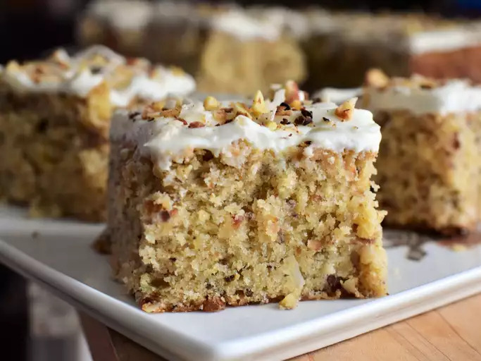

Coconut Cake

Toasted Almond and Coconut Cake with White Chocolate Ganache
Browned butter, toasted almonds, and toasted coconut give this moist, tender cake a major flavor boost. Topped with a whipped white chocolate ganache, it's a perfect anytime dessert. There are quite a few required steps in making this, but it's well worth the extra effort.
- Prep Time: 1 hr
- Cook Time: 1 hr
- Cool time: 30 mins
- Total Time: 2 hr 30 mins
Ingredients
White Chocolate Ganache:
- ½ cup white chocolate chips
- ½ cup heavy cream
Cake:
- 1 cup sweetened flaked coconut
- ¾ cup finely chopped almonds
- ¾ cup unsalted butter
- 1 ½ cups all-purpose flour
- 1 teaspoon baking powder
- ½ teaspoon salt
- ½ teaspoon ground nutmeg
- ¾ cup white sugar
- ¼ cup firmly packed brown sugar
- 2 large eggs, at room temperature
- 1 teaspoon almond extract
- 1 teaspoon vanilla extract
- 1 ¼ cups buttermilk, at room temperature
Directions
- Place white chocolate chips and heavy cream into a microwave-safe bowl. Microwave at 50% power until melted, about 1 minute, stirring every 30 seconds. Stir to thoroughly combine. Cool at room temperature for 10 minutes; cover and place into the refrigerator to cool completely, at least 1 hour.
- Add coconut flakes and chopped almonds to a large skillet; cook over medium-low heat, stirring constantly, until fragrant and lightly browned, about 5 minutes. Immediately pour into a bowl and allow to cool completely.
- Heat butter in a small light-colored saucepan over medium-low heat, stirring frequently, until butter smells nutty and brown bits begin to form in the bottom of the pan, about 5 minutes. Pour browned butter into a large mixing bowl; allow to cool for 15 minutes.
- Preheat the oven to 350 degrees F (175 degrees C). Line a 9-inch square baking pan with enough parchment paper to leave overhang on all sides.
- Whisk together flour, baking powder, salt and nutmeg in a bowl; set aside.
- Add white and brown sugars to the bowl with cooled browned butter. Cream together until mixture is light and fluffy, 2 to 3 minutes. Add in eggs 1 at a time, mixing well after each addition; beat an additional 2 minutes until mixture has slightly lightened in color. Mix in almond and vanilla extracts. Pour in half of flour mixture and mix until just combined. Pour in buttermilk and mix until just combined. Add in remaining flour mixture and mix until just combined.
- Measure out 2 tablespoons of toasted coconut mixture; set aside for topping. Fold remaining coconut mixture into cake batter. Pour batter into prepared pan and smooth into an even layer. Tap pan on the counter a few times to remove air bubbles.
- Bake in the preheated oven until the top of the cake springs back lightly when touched and a toothpick inserted near the center comes out clean, 45 to 50 minutes. Remove cake from oven; place on a wire rack to cool completely, about 30 minutes.
- Remove white chocolate ganache from the refrigerator. Whip on medium-high speed until it holds stiff peaks, about 2 minutes. Spread whipped chocolate ganache evenly onto completely cooled cake. Sprinkle reserved coconut mixture on top of cake.
Return to top
Return to main page